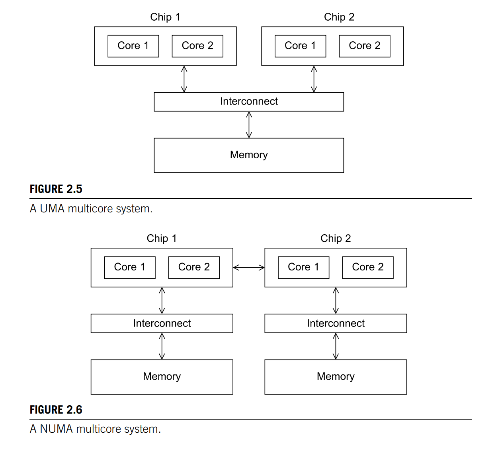
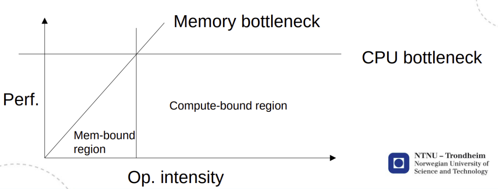
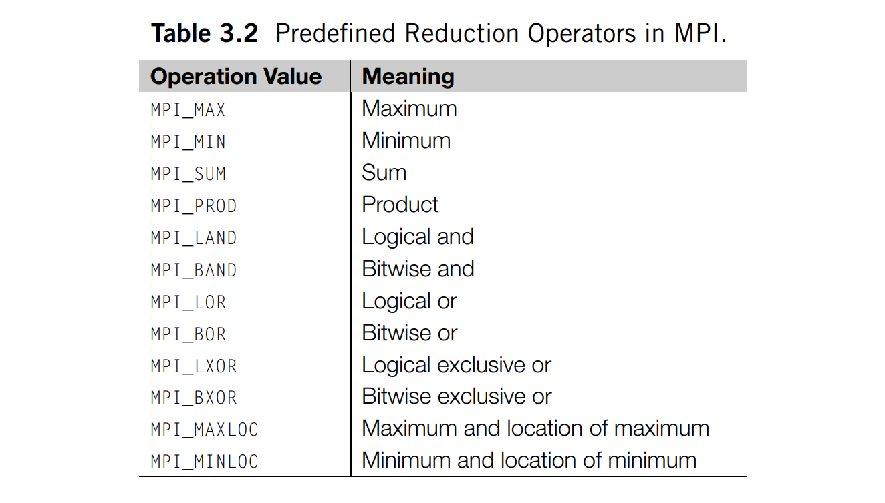
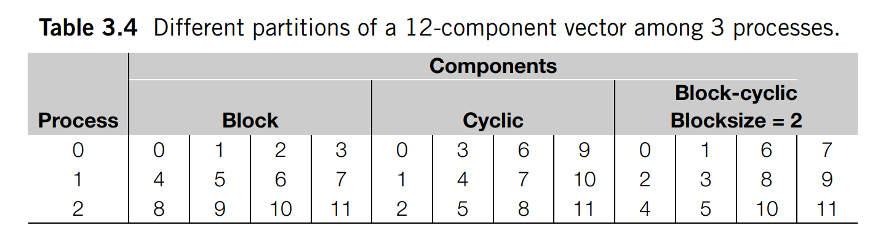
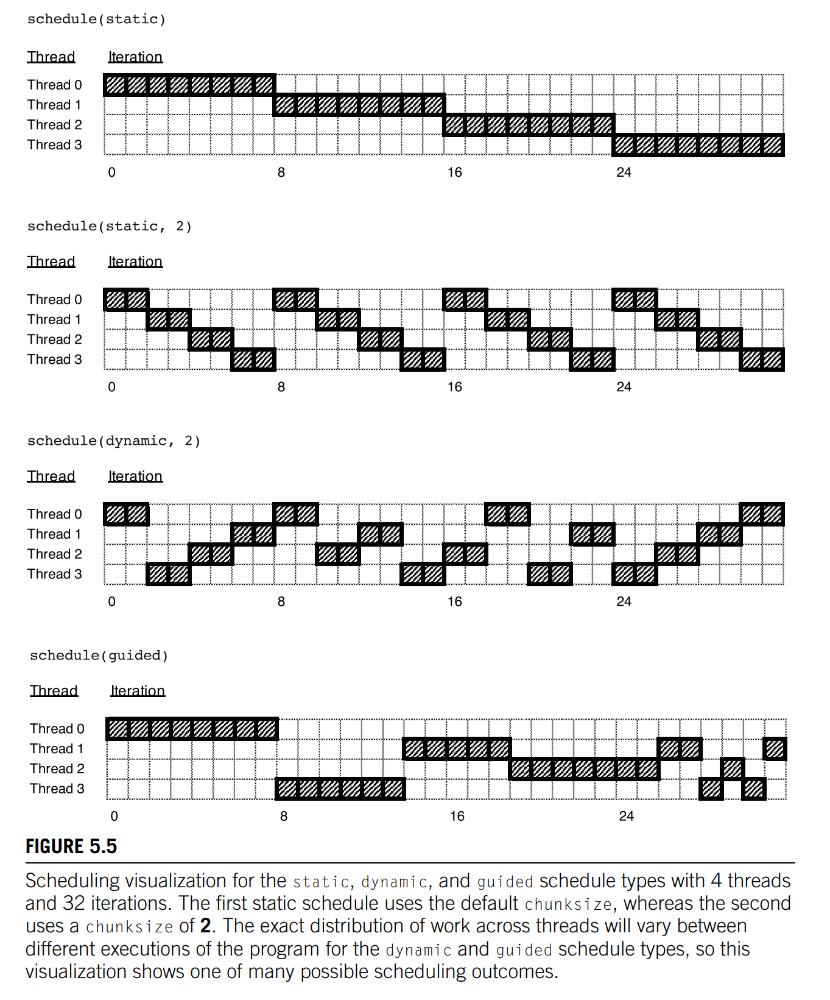
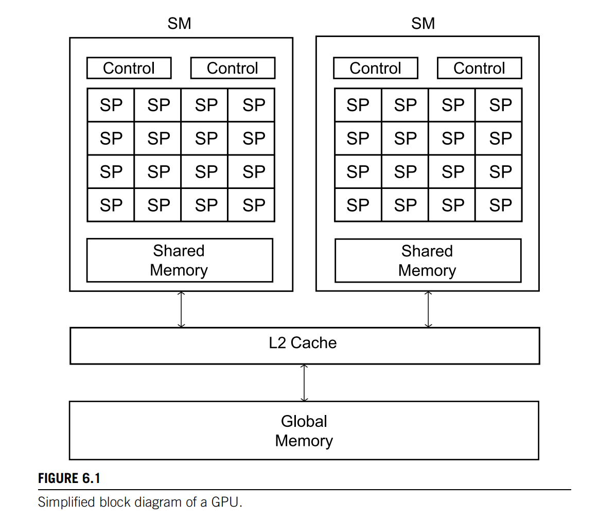

An Introduction To Parallel Programming
1 Why parallel computing (s. 1-14)
2 Parallel hardware and parallel software (s. 17-84)
The von Neumann architecture
The classical von Neumann architecture consists of main memory, a central processing unit (CPU) interconnection between the memory and the CPU. Main memory consists of a collection of locations, each of which is capable of storing both instructions and data.
The separation of memory and CPU is often called the von Neumann bottleneck, since the interconnect determines the rate at which instructions and data can be accessed.
When a user runs a program, the operating system creates a process - an instance of a computer program that is being executed. A process consists of several entities:
- The executable machine language program
- A block of memory, which will include
- the executable code,
- a call stack,
- a heap.
- Resource descriptors
- Security information
- Process state information
Most modern operating systems are multitasking, where multiple processes are scheduled.
Threads are "lighter weight" than processes and provides a mechanism for programmers to divide their programs into more or less independent tasks. They usually share the same memory, but they’ll need a record of their own program counters call stacks. When a thread is started, it forks off the process; when a thread terminates, it joins the process.
Caching
A cache is a collection of memory locations that can be accessed in less time than some other memory locations. After accessing one memory location, a program will typically access a nearby location (spatial locality) in the near future (temporal locality). To exploit the principle of locality, a memory access will fetch a cache block that is typically a chunk of 16 consecutive addresses. When the CPU needs to access an instruction or data, it works its way down the cache hierarchy: First it checks the level 1 cache, then the level 2, and so on.
After writing to a cache, the cache and main memory are inconsistent. There are two basic approaches to dealing with the inconsistency. In write-through caches, the line is written to main memory when it is written to the cache. In write-back caches, the updated data in the cache is marked dirty, and when the cache line is replaced by a new cache line from memory, the dirty line is written to memory.
At one extreme is a fully associative cache, in which a new line can be placed at any location in the cache. At the other extreme is a direct mapped cache, in which each cache line has a unique location in the cache to which it will be assigned. Intermediate schemes are called n-way set associative. When more than one line in memory can be mapped to several different locations (fully associative and n-way set associative), we also need to be able to decide which line should be replaced. A common approach is called least recently used (LRU).
C stores two-dimensional arrays in "row-major" order. When iterating through one, the inner-most loop should iterate through each row, because of cache-performance.
Virtual Memory
Virtual memory was developed so that main memory can function as a cache for secondary storage. Parts that are idle can be kept in a block of secondary storage, called swap space. Blocks are called pages and commonly range from 4 to 16 kilobytes. When the program is run and it refers to a virtual address, the page table is used to translate the virtual address into a physical address. Processors also have a special address translation cache, called a translation-lookaside buffer (TLB). It caches a small number of entries (typically 16–512) from the page table in very fast memory. Virtual memory always uses a write-back scheme. Virtual memory is usually controlled by a combination of system hardware and operating system software.
Instruction level parallelism
Instruction-level parallelism, or ILP, attempts to improve processor performance by having multiple processor components or functional units simultaneously executing instructions. There are two main approaches to ILP: pipelining, in which functional units are arranged in stages; and multiple issue, in which multiple instructions can be simultaneously initiated. Both approaches are used in virtually all modern CPUs.
Pipelining
Multiple issue
If the functional units are scheduled at compile time, the multiple issue system is said to use static multiple issue. If they’re scheduled at run-time, the system is said to use dynamic multiple issue. A processor that supports dynamic multiple issue is sometimes said to be superscalar. In speculation, the compiler or the processor makes a guess about an instruction, and then executes the instruction on the basis of the guess. This is used to find instructions that can be executed simultaneously.
Hardware multithreading
Thread-level parallelism, or TLP, attempts to provide parallelism through the simultaneous execution of different threads. Hardware multithreading provides a means for systems to continue doing useful work when the task being currently executed has stalled. For this to be useful, the system must support very rapid switching between threads. In fine-grained multithreading, the processor switches between threads after each instruction, skipping threads that are stalled. Coarse-grained multithreading only switches threads that are stalled waiting for a time-consuming operation to complete (e.g., a load from main memory). Simultaneous multithreading, or SMT, is a variation on fine-grained multithreading. It attempts to exploit superscalar processors by allowing multiple threads to make use of the multiple functional units.
Classifications of parallel computers
Flynn’s taxonomy classifies a parallel computer according to the number of instruction streams and the number of data streams it can simultaneously manage. A classical von Neumann system is therefore a single instruction stream, single data stream, or SISD system.
Another classification is shared vs. distributed memory. In shared memory systems, the cores can share access to memory locations, and the cores coordinate their work by modifying shared memory locations. In distributed memory systems, each core has its own, private memory, and the cores coordinate their work by communicating across a network.
SIMD
Single instruction stream, multiple data. These systems often execute their instructions in lockstep: the first instruction is applied to all of the data elements simultaneously, then the second is applied, and so on. Branching in SIMD systems is handled by idling those processors that might operate on a data item to which the instruction doesn’t apply. This behavior often makes SIMD systems poorly suited for task parallelism, in which each processor executes a different task, or even data-parallelism, with many conditional branches.
- Vector processors
- Graphics processing units (GPU)
Current generation GPUs are not pure SIMD, they can run more than one instruction stream on a single core.
MIMD
Multiple instruction, multiple data.
In a shared-memory system a collection of autonomous processors is connected to a memory system via an interconnection network, and each processor can access each memory location. In a shared-memory system, the processors usually communicate implicitly by accessing shared data structures. In a distributed-memory system, each processor is paired with its own private memory, and the processor-memory pairs communicate over an interconnection network. So in distributed-memory systems, the processors usually communicate explicitly by sending messages or by using special functions that provide access to the memory of another processor.
Shared memory systems
The most widely available shared-memory systems use one or more multicore processors.

With multiple multicore processors, the interconnect can either connect all the processors directly to main memory (uniform memory access, UMA), or each processor can have a direct connection to a block of main memory, and the processors can access each other’s blocks of main memory through special hardware built into the processors (nonuniform memory access, NUMA). With UMA, the time to access all the memory locations will be the same for all the cores, while with NUMA, a memory location to which a core is directly connected, can be accessed more quickly than a memory location that must be accessed through another chip.
Distributed memory systems
The most widely available distributed-memory systems are called clusters. They are composed of a collection of commodity systems - for example, PCs - connected by a commodity interconnection network - for example, Ethernet.
Interconnection networks
The interconnect plays a decisive role in the performance of both distributed- and shared-memory systems: even if the processors and memory have virtually unlimited performance, a slow interconnect will seriously degrade the overall performance of all but the simplest parallel program.
For shared-memory interconnects, it was common for shared memory systems to use a bus to connect processors and memory. As the size of shared-memory systems has increased, buses are being replaced by switched interconnects. For example, a crossbar.
Distributed-memory interconnects are often divided into two groups: direct interconnects and indirect interconnects. In a direct interconnect each switch is directly connected to a processor-memory pair, and the switches are connected to each other. One of the simplest measures of the power of a direct interconnect is the number of links. When counting links in a direct interconnect, it’s customary to count only switch-to-switch links.
One measure of “number of simultaneous communications” or “connectivity” is bisection width. To understand this measure, imagine that the parallel system is divided into two halves, and each half contains half of the processors or nodes. How many simultaneous communications can take place “across the divide” between the halves? The bisection width is supposed to give a “worst-case” estimate. Bisection bandwidth is often used as a measure of network quality.
The ideal direct interconnect is a fully connected network, in which each switch is directly connected to every other switch.
In an indirect interconnect, the switches may not be directly connected to a processor. They’re often shown with unidirectional links and a collection of processors, each of which has an outgoing and an incoming link, and a switching network. For example, a (unidirectional) crossbar.
The latency is the time that elapses between the source’s beginning to transmit the data and the destination’s starting to receive the first byte. The bandwidth is the rate at which the destination receives data after it has started to receive the first byte. The bandwidth of a link is the rate at which it can transmit data.
Cache coherence
There are two main approaches to ensuring cache coherence: snooping cache coherence and directory-based cache coherence.
When the cores share a bus, any signal transmitted on the bus can be “seen” by all the cores connected to the bus. If another core is “snooping” the bus, it will see that a cache line has been updated, and it can mark its copy as invalid. Snooping works with both write-through and write-back caches, but for write-back caches, an extra communication is necessary since updates are not immediately sent to memory. Snooping cache coherence requires a broadcast every time a variable is updated, this is expensive in large networks.
Directory-based cache coherence protocols attempt to solve the problem of expensive broadcasts through the use of a data structure called a directory, which stores the status of each cache line. Clearly, there will be substantial additional storage required for the directory, but when a cache variable is updated, only the cores storing that variable need to be contacted.
When one core updates a variable in one cache line, and another core wants to access another variable in the same cache line, it will have to access main memory, since the unit of cache coherence is the cache line. That is, the second core only “knows” that the line it wants to access has been updated. It doesn’t know that the variable it wants to access hasn’t been changed. This is called false sharing.
Parallel software
Unless our problem is embarrassingly parallel, the development of a parallel program needs at a minimum to address the issues of load balance, communication, and synchronization among the processes or threads.
SPMD (single program, multiple data) programs consist of a single executable that can behave as if it were multiple different programs through the use of conditional branches.
They can easily implement data-parallelism
if (I’m thread/process 0)
// operate on the first half of the array;
else
// operate on the second half of the array ;
As well as task-parallelism
if (I’m thread/process 0)
// do this;
else
// do that;
In the dynamic thread paradigm, there is often a master thread and at any given instant a (possibly empty) collection of worker threads. In the static thread paradigm, all of the threads are forked after any needed setup by the master thread and the threads run until all the work is completed.
When threads or processes attempt to simultaneously access a shared resource, and the accesses can result in an error, we often say the program has a race condition, because the threads or processes are in a “race” to carry out an operation. An operation that writes to a memory location is atomic if, after a thread has completed the operation, it appears that no other thread has modified the memory location. A block of code that can only be executed by one thread at a time is called a critical section, and it’s usually our job as programmers to ensure mutually exclusive access to a critical section.
If a function is not thread safe, it means that if it is used in a multithreaded program, there may be errors or unexpected results. An example is the the C string library function strtok, for its use of static variables. There is a thread-safe version of strtok called strtok_r.
GPU Programming
GPU programming is really heterogeneous programming, since it involves programming two different types of processors (the CPU host and the GPU device).
The processors share a large block of memory, but each individual processor has a small block of much faster memory that can only be accessed by threads running on that processor. These blocks of faster memory can be thought of as a programmer-managed cache.
The threads running on a processor are typically divided into groups: the threads within a group use the SIMD model, and two threads in different groups can run independently. The threads in a SIMD group may not run in lockstep. That is, they may not all execute the same instruction at the same time. However, no thread in the group will execute the next instruction until all the threads in the group have completed executing the current instruction. For conditional statements, some threads may idle.
Performance
The speedup of a parallel program is
Linear speedup is where is the number of processes.
The efficiency of a parallel program is , and is a measure of how well the processes are utilized.
It's often the case that
In many parallel programs, as the problem size is increased but the number of processes/threads is fixed, the parallel overhead grows much more slowly than the time spent in solving the original problem. Thus, speedup and efficiency often increase with the problem size.
Amdahl's law and Gustafson’s law
Amdahl's law states that the speedup of a program is limited by the ratio of the program that is parallelizable. Let be the ratio that is inherently serial and be the number of processes. Then the speedup is given by
Amdahl’s law demonstrates strong scaling. It doesn’t take into consideration the fact that the unparallelized part often decreases in size relative to the parallelized part as the problem size increases.
Gustafson’s law says that increase of problem size for can retain scalability with respect to the number of processors. Let be the ratio that is inherently serial
Amdahl’s law demonstrates weak scaling.
Hockney
Ping-pong model. Measure the time spent for A to send a message to B and for B to respond to A.
Roofline model
X: operational intensity, Y: Performance. Memory bound under Y = X, Compute bound further right.

Scalability
Suppose we run a parallel program with a fixed number of processes/threads and a fixed input size, and we obtain an efficiency E. Suppose we now increase the number of processes/threads that are used by the program. If we can find a corresponding rate of increase in the problem size so that the program always has efficiency E, then the program is scalable.
If, when we increase the number of processes/threads, we can keep the efficiency fixed without increasing the problem size, the program is said to be strongly scalable. If we can keep the efficiency fixed by increasing the problem size at the same rate as we increase the number of processes/threads, then the program is said to be weakly scalable.
GPU Performance
We can, of course, compare the performance of a GPU program to the performance of a serial program, and it’s quite common to see reported speedups of GPU programs over serial programs or parallel MIMD programs.
However, efficiency is ordinarily not used in discussions of the performance of GPUs. The informal usage of scalability is routinely applied to GPUs: a GPU program is scalable if we can increase the size of the GPU and obtain speedups over the performance of the program on a smaller GPU.
Parallel program design
Ian Foster provides an outline of steps to prallelize a serial program, called Foster's methodology:
- Partitioning: Divide the computation to be performed and the data operated on by the computation into small tasks that can be executed in parallel.
- Communication: Determine what communication needs to be carried out among the tasks.
- Aggregation: Combine tasks and communications identified in the first step into larger tasks.
- Mapping: Assign the composite tasks identified in the previous step to processes/threads.
3 Distributed memory programming with MPI (s. 89-148)
Message-Passing Interface (MPI) defines a library of functions.
It's common for processes to be identified by nonnegative integer ranks. processes will have ranks .
mpiexec -n NUM_PROCESSES ./mpi_hello
Structure of an MPI program
#include "mpi.h"
int main(int argc, char* argv[]) {
int comm_size;
int rank;
MPI_Init(&argc, &argv);
MPI_Comm_size(MPI_COMM_WORLD, &comm_size);
MPI_Comm_rank(MPI_COMM_WORLD, &rank);
/*
Program
*/
MPI_Finalize();
}
In MPI a communicator is a collection of processes that can send messages to each other.
SPMD Programs
The if−else statement makes our program SPMD - single program, multiple data.
if (rank == 0) {
/* Do something */
} else {
/* Do something else */
}
MPI_Send and MPI_Recv
int MPI_Send (
/* Message content */
void* msg_buf_p,
int msg_size,
MPI_Datatype msg_type,
/* Message destination */
int recv_rank,
int send_tag,
MPI_Comm send_comm
);
int MPI_Recv (
/* Message content */
void* msg_buf_p,
int buf_size,
MPI_Datatype buf_type,
/* Message source */
int send_rank,
int recv_tag,
MPI_Comm recv_comm,
MPI_Status* status_p
);
The message is generally sent from rank q to rank p if
send_rank = qrecv_rank = psend_comm = recv_commsend_tag = recv_tagsend_type = recv_typebuf_size >= msg_size
If one doesn't know (the order of) the ranks that one receives from, the wildcard argument MPI_ANY_SOURCE may be used as the source_rank parameter. Similarily, also have MPI_ANY_TAG. When using the MPI_ANY_* arguments, one may receive messages without knowing their size, sender and tag. However, source and tag can be determined from MPI_Status* status_p, and size from
int MPI_Get_count (
MPI_Status * status_p,
MPI_Datatype type,
int* count_p
);
MPI characteristics
We say that MPI uses a push communication mechanism rather than a pull mechanism, because only a receiver can use a wildcard argument.
MPI requires that messages be non-overtaking. This means that if process q sends two messages to process r, then the first message sent by q must be available to r before the second message. However, there is no restriction on the arrival of messages sent from different processes.
I/O
Most MPI implementations allow all processes access to stdout. Note that this may result in nondeterminism. Unlike output, most MPI implementations only allow process 0 in MPI_COMM_WORLD access to stdin.
Collective communications
In MPI parlance, communication functions that involve all the processes in a communicator are called collective communications.
Collective communications differ in several ways from point-to-point communications:
- All the processes in the communicator must call the same collective function.
- The arguments passed by each process to an MPI collective communication must be compatible.
- The
output_data_pargument is (usually) only used ondest_process. - Collective communications don’t use tags.
Reduce

int MPI_Reduce (
void* input_data_p,
void* output_data_p,
int count,
MPI_Datatype datatype,
MPI_Op operator,
int dest_process,
MPI_Comm comm
);
By using a count argument greater than 1, MPI_Reduce can operate on arrays instead of scalars.
MPI_Allreduce is similar to MPI_Reduce, except that there is no dest_process since all the processes should get the result.
Broadcast
A collective communication in which data belonging to a single process is sent to all of the processes in the communicator is called a broadcast.
int MPI_Bcast (
void* data_p,
int count,
MPI_Datatype datatype,
int source_proc,
MPI_Comm comm
);
The data_p argument is an input argument on the process with rank source_proc and an output argument on the other processes.

Scatter and gather
MPI_Scatter divides the data referenced by send_buf_p into comm_sz pieces - the first piece goes to process 0, the second to process 1, the third to process 2, and so on.
MPI_Gather collects data from all processes into a single process. The data stored in the memory referred to by send_buf_p on process 0 is stored in the first block in recv_buf_p, the data stored in the memory referred to by send_buf_p on process 1 is stored in the second block, and so on.
Barriers
MPI_Barrier ensures that no process will return from calling it until every process in the communicator has started calling it.
MPI-derived datatypes
In virtually all distributed-memory systems, communication can be much more expensive than local computation. Thus if we can reduce the total number of messages we send, we’re likely to improve the performance of our programs. MPI provides three basic approaches to consolidating data that might otherwise require multiple messages: the count argument to the various communication functions, derived datatypes, and MPI_Pack/Unpack.
In MPI, a derived datatype can be used to represent any collection of data items in memory by storing both the types of the items and their relative locations in memory. We can use MPI_Type_create_struct to build a derived datatype that consists of individual elements that have different basic types:
MPI_Datatype input_mpi_t = ...;
int MPI_Type_create_struct (
int count,
int array_of_blocklengths[],
MPI_Aint array_of_displacements[],
MPI_Datatype array_of_types[],
MPI_Datatype* new_type_p
);
MPI_Type_commit(input_mpi_t);
...
MPI_Type_free(input_mpi_t);
Before we can use input_mpi_t in a communication function, we must first commit it with a call to MPI_Type_commit. After use, we should free it.
Timing
MPI_Wtime returns wall clock time. Use with MPI_Barrier to time all processes.
Speedup and efficiency
Communication modes
| Send Modes | MPI function | Completion Condition |
|---|---|---|
| **Standard send | MPI_Send |
message sent (receive state unknown) |
| Synchronous send | MPI_Ssend |
only completes when the receive has completed |
| Buffered send | MPI_Bsend |
always completes (unless an error occurs) irrespective of the receiver |
| Ready send | MPI_Rsend |
may be used only when the a matching receive has already been posted |
Safety in MPI programs
We might try to implement some communication with a call to MPI_Send and a call to MPI_Recv:
MPI_Send(...);
MPI_Recv(...);
This, however, might result in the program’s hanging or crashing. Messages that are relatively small will be buffered by MPI_Send, but for larger messages, it will block. If the MPI_Send executed by each process blocks, no process will be able to start executing a call to MPI_Recv, and the program will deadlock. A program that relies on MPI-provided buffering is said to be unsafe.
MPI_Ssend (synchronous send) is guaranteed to block until the matching receive starts. So, we can check whether
a program is safe by replacing the calls to MPI_Send with calls to MPI_Ssend.
MPI provides an alternative to scheduling the communications ourselves—we can call the function MPI_Sendrecv. This function carries out a blocking send and a receive in a single call, scheduled such that it will not deadlock.
4 Shared-memory programming with Pthreads (s. 159-212)
In shared-memory programming, an instance of a program running on a processor is usually called a thread (unlike MPI, where it’s called a process).
Like MPI, Pthreads specifies a library that can be linked with C programs. Unlike MPI, the Pthreads API is only available on POSIX systems. Other thread specifications (Java threads, Windows threads, Solaris threads) support the same basic ideas, so once you’ve learned how to program in Pthreads, it won’t be difficult to learn how to program with another thread API.
Structure of a PThreads program
#include An alternative to pthread_join is pthread_detach, which indicates that the thread's resources should be freed automatically upon termination.
The approach above is very similar to our approach to MPI programming. There is, however, a very different approach to the design of multithreaded programs where subsidiary threads are only started as the need arises. Example: Web server. If we don't want the overhead of starting new threads, we may use a thread pool where threads are idle instead of being terminated.
Critical sections
When multiple threads attempt to access a shared resource, such as a shared variable or a shared file, at least one of the accesses is an update, and the accesses can result in an error, we have a race condition.
A critical section is a block of code that updates a shared resource that can only be updated by one thread at a time.
Busy waiting
The following while loop is an example of busy-waiting.
y = Compute(my_rank);
while (flag != my_rank);
x = x + y;
flag ++;
If compiler optimization is turned on, it is possible that the compiler will make changes that will affect the correctness of busy-waiting. An optimizing compiler might determine that the program would make better use of registers if the order of the statements were switched.
Mutexes
Mutex is an abbreviation of mutual exclusion, and is a special type of variable that can be used to restrict access to a critical section to a single thread at a time.
pthread_mutex_t mutex;
pthread_mutex_init(&mutex);
pthread_mutex_lock(&mutex);
/* Critical section */
pthread_mutex_unlock(&mutex);
pthread_mutex_destroy(&mutex):
Note that with mutexes, the order in which the threads execute the code in the critical section is more or less random.
Semaphores
With semaphores, a process does not acquire the lock.
int sem_init(sem_t* semaphore_p, int shared, unsigned initial_val);
int sem_destroy(sem_t* semaphore_p);
int sem_post(sem_t* semaphore_p);
int sem_wait(sem_t* semaphore_p);
# include < semaphore . h>
/* messages: [NULL, NULL, ...] */
/* semaphores: [semaphore(0), semaphore(0), ...] */
/* Send msg */
sprintf(my_msg, "Hello to %ld from %ld", dest, my_rank);
messages[dest] = my_msg;
sem_post(&semaphores[dest]); // Unlocks the semaphore of dest (+1)
/* Receive msg */
sem_wait(&semaphores[my_rank]); // Waits for another process to unlock our semaphore, then (-1)
printf("Thread %ld > %s\n", my_rank, messages[my_rank]);
This type of synchronization, when a thread can’t proceed until another thread has taken some action, is sometimes called producer–consumer synchronization.
Binary semaphores (like above) are failry typical. However, counting semaphores can be useful in scenarios where we wish to restrict access to a finite resource. We can initialize the semaphore to the number of threads that may use the resource at a time. To access the resource, call sem_wait. When finished, call sem_post.
Barrier
A barrier can be created with
- A mutex and busy waiting
- A semaphore
- Condition variables
Condition variables
A condition variable is a data object that allows a thread to suspend execution until a certain event or condition occurs. A condition variable is always associated with a mutex.
int pthread_cond_init(pthread_cond_t* cond_p, const pthread_condattr_t* cond_attr_p);
int pthread_cond_destroy(pthread_cond_t* cond_p);
int pthread_cond_signal(pthread_cond_t* cond_var_p);
int pthread_cond_broadcast(pthread_cond_t* cond_var_p);
int pthread_cond_wait(pthread_cond_t* cond_var_p, pthread_mutex_t* mutex_p);
pthread_cond_wait implements the following sequence of functions
pthread_mutex_unlock(&mutex_p);
wait_on_signal(&cond_var_p);
pthread_mutex_lock(&mutex_p);
The following code implements a barrier with a condition variable:
pthread_mutex_lock(&mutex); // lock
counter++;
if (counter == thread_count) {
counter = 0;
pthread_cond_broadcast(&cond_var); // signal all
} else {
while (pthread_cond_wait(&cond_var, &mutex) != 0); // unlock; wait for signal; lock
}
pthread_mutex_unlock(&mutex); // unlock
When protected application state cannot be represented by an unsigned integer counter, condition variables may be preferable to semaphores.
Read-Write Locks
Multiple threads can simultaneously obtain the lock by calling the read-lock function, while only one thread can obtain the lock by calling the write-lock function.
int pthread_rwlock_init(pthread_rwlock_t* rwlock_p, const pthread_rwlockattr_t* attr_p);
int pthread_rwlock_destroy(pthread_rwlock_t* rwlock_p);
int pthread_rwlock_rdlock(pthread_rwlock_t* rwlock_p);
int pthread_rwlock_wrlock(pthread_rwlock_t* rwlock_p);
int pthread_rwlock_unlock(pthread_rwlock_t* rwlock_p);
Caches
5 Shared-memory programming with OpenMP (s. 221-281)
Like Pthreads, OpenMP is an API for shared-memory MIMD programming. The “MP” in OpenMP stands for “multiprocessing,” a term that is synonymous with shared-memory MIMD computing.
OpenMP allows the programmer to simply state that a block of code should be executed in parallel, and the precise determination of the tasks and which thread should execute them is left to the compiler and the run-time system. This requires compiler support for some operations.
OpenMP compilers don’t check for dependences among iterations in a loop that’s being parallelized with a parallel for directive. A loop in which the results of one or more iterations depend on other iterations cannot, in general, be correctly parallelized by OpenMP without using features such as the Tasking API.
The collection of threads executing block of code is called a team. omp_get_thread_num returns the calling thread’s rank. omp_get_num_threads returns the number of threads in the current team.
Directives
Parallel directive
This directive tells the run-time system to execute the following structured block of code in parallel. It may fork or start several threads to execute the structured block. The number of threads started is system dependent, but most systems will start one thread for each available core.
# pragma omp parallel
{
...
}
There is an implicit barrier at the end of the structured block.
Parallel for directive
OpenMP will only parallelize for loops for which the number of iterations can be determined from the for statement itself and prior to execution of the loop. To ensure that our for loop has one of the canonical forms. It must also not have any loop-carried dependences.
#pragma omp parallel for
for (int i = 0; i < N; i++) {
printf("Hello, world.\n");
}
The for directive, unlike the parallel for directive, doesn’t fork any threads. It uses whatever threads have already been forked in the enclosing parallel block. There is an implicit barrier at the end of the loop.
Critical directive, Atomic directive, Locks
The critical directive forces mutually exclusive access to the section by all the threads. The default behavior of OpenMP is to treat all critical blocks as part of one composite critical section, which can be highly detrimental to our program’s performance. However, OpenMP does provide the option of adding a name to a critical directive such that critical sections may be differentiated between at compile time. For run-time mutual exclusion, use locks.
#pragma omp critical(name)
The atomic directive is a potentially higher performance directive than critical. Unlike the critical directive, it can only protect critical sections that consist of a single C assignment statement, which must have the form x <op>= <expression>. Note that <expression> cannot reference x
Locks
void omp_init_lock(omp_lock_t∗ lock_p);
void omp_set_lock(omp_lock_t∗ lock_p);
void omp_unset_lock(omp_lock_t∗ lock_p);
void omp_destroy_lock(omp_lock_t∗ lock_p);
Note that there is no guarantee of fairness in mutual exclusion constructs. Also, it can be dangerous to “nest” mutual exclusion constructs.
Single directive
The single construct specifies that the associated structured block is executed by only one of the threads in the team (not necessarily the master thread), in the context of its implicit task. The other threads in the team, which do not execute the block, wait at an implicit barrier at the end of the single construct unless a nowait clause is specified.
Barrier directive
Recall that we’ve seen that several OpenMP directives provide implicit barriers when they’re completed, that is, no thread will proceed past the end of the block until all the threads in the team have completed the block. However, when we need an explicit barrier (e.g. inside a parallel block), we may use
#pragma omp barrier
Clauses
Private clause
The scope of a variable is the collection of threads to which the variable is accessible. Typically, any variable that was defined before the OpenMP directive has shared scope within the construct.
It’s important to remember that the value of a variable with private scope is unspecified at the beginning of a parallel block. Its value is also unspecified after completion of a parallel block.
Variables that are defined within an OpenMP construct have private scope, since they will be allocated from the executing thread’s stack.
Schedule clause
schedule(<type> [,<chunksize>])
The type can be any one of the following:
-
static. The iterations can be assigned to the threads before the loop is executed.
-
dynamic or guided. The iterations are assigned to the threads while the loop is executing, so after a thread completes its current set of iterations, it can request more from the run-time system.
-
dynamic. Assigns ranges to threads on a first-come, first-served basis. This can be advantageous if loop iterations do not take a uniform amount of time to compute
-
guided. Similar to dynamic, but as chunks are completed, the size of the new chunks decreases.
-
runtime. The schedule is determined at run-time based on an environment variable
OMP_SCHEDULE. This variable can be set to any of the previous schedule types -
auto. The compiler and/or the run-time system determine the schedule.

The default schedule of OpenMP implementations is usually equivalent to
schedule(static , total_iterations / thread_count)
Reduction clause
A reduction operator is an associative binary operation (such as addition or multiplication), and a reduction is a computation that repeatedly applies the same reduction operator to a sequence of operands to get a single result.
double global_result = 0.0;
#pragma omp parallel num_threads (thread_count) \
reduction (+: global_result)
global_result += Local_trap(double a, double b, int n);
Handles the critical section of +=
Tasking
While many problems are straightforward to parallelize with OpenMP, they generally have a fixed or predetermined number of parallel blocks and loop iterations to schedule across participating threads.
When a thread reaches a block of code with this directive, a new task is generated by the OpenMP run-time that will be scheduled for execution. Task blocks behave similarly to a standard parallel region, but can launch an arbitrary number of tasks instead of only num_threads. In fact, tasks must be launched from within a parallel region but generally by only one of the threads in the team.
For example,
f1(args1);
f2(args2);
f3(args3);
print("All done.")
Can be parallelized using the following directives
#pragma omp parallel numthreads(3)
#pragma omp single
{
#pragma omp task
f1(args1);
#pragma omp task
f2(args2);
#pragma omp task
f3(args3);
#pragma omp taskwait
print("All done.")
}
6 GPU programming with CUDA (s. 291-355)
For our purposes, the most basic GPU is a single instruction multiple data or SIMD processor.

In Nvidia systems, the software analogs of SPs (Streaming Processors) and SMs (Streaming Multiprocessors) are threads and thread blocks, respectively. However, the analogy isn’t precise: while a thread block will run on a single SM, multiple, independent thread blocks can run on one SM. Furthermore, the threads in a thread block aren’t constrained to execute in lockstep: a warp is a subset of the threads in a thread block that executes in lockstep. Currently, Nvidia warps consist of 32 consecutive threads.
Structure of a CUDA program
A kernel is a CUDA function that is called by the CPU host but that runs on the GPU or device. Since these have different architectures, writing a CUDA program is sometimes called heterogeneous programming.
#include <stdio .h>
#include <cuda .h>
/* Kernel : Runs on GPU (device) */
__global__ void Hello(void) {
int rank = blockDim.x ∗ blockIdx.x + threadIdx.x;
printf("Hello from rank %d!\n", rank);
}
/* Host : Runs on CPU */
void main(int argc, char* argv[]) {
int grid_size; // number of blocks in grid
int block_size; // number of threads in block
Hello<<<grid_size, block_size>>>();
cudaDeviceSynchronize();
}
Note that by default only one kernel at a time runs on the device.
Nvidia compute capabilities and device architectures
There are limits on the number of threads and the number of blocks. The limits depend on what Nvidia calls the compute capability of the GPU.
Qualifiers
__global__ // indicates global scope. Used for kernels.
__host__ // indicates host scope.
__device__ // indicates device scope.
__managed__ // similar to cudaMallocManaged.
__shared__
Memory allocation
__host__ cudaError_t cudaMallocManaged(void ∗∗ d_ptr, size_t size, unsigned flags);
__host__ __device__ cudaError_t cudaFree(void ∗ ptr);
The function cudaMallocManaged is one of several CUDA memory allocation functions. It allocates memory that will be automatically managed by the “unified memory system.” This is a relatively recent addition to CUDA and it allows a programmer to write CUDA programs as if the host and device shared a single memory: pointers referring to memory allocated with cudaMallocManaged can be used on both the device and the host, even when the host and the device have separate physical memories.
__host__ __device__ cudaError_t cudaMalloc(void∗∗ d_ptr, size_t size);
__host__ __device__ cudaError_t cudaFree(void ∗ ptr);
__host__ cudaError_t cudaMemcpy(void∗ dest, const void∗ source, size_t count, cudaMemcpyKind kind);
/* cudaMemcpyKind can be cudaMemcpyHostToDevice or cudaMemcpyDeviceToHost */
Without unified memory, pointers on the host aren’t valid on the device, and vice versa. We use the C library function malloc for the host arrays, and the CUDA function cudaMalloc for the device arrays. After we’ve initialized on the host, we copy the contents over to the device using cudaMemcpy. We usually perform a copy back to the host after the computation has completed.
Atomic functions
The CUDA library defines several atomic addition functions. Note that these may decrease performance by making the program more serial.
__device__ float atomicAdd(float* float_p, float val);
Local variables, registers, shared and global memory
SMs in an Nvidia processor have access to two collections of memory locations: each SM has access to its own “shared” memory, which is accessible only to the SPs belonging to the SM. More precisely, the shared memory allocated for a thread block is only accessible to the threads in that block. On the other hand, all of the SPs and all of the threads have access to “global” memory. The number of shared memory locations is relatively small, but they are quite fast, while the number of global memory locations is relatively large, but they are relatively slow. So we can think of the GPU memory as a hierarchy with three “levels.” At the bottom, is the slowest, largest level: global memory. In the middle is a faster, smaller level: shared memory. At the top is the fastest, smallest level: the registers.
Warps and warp shuffles
In CUDA a warp is a set of threads with consecutive ranks belonging to a thread block. The threads in a warp operate in SIMD fashion. So threads in different warps can execute different statements with no penalty, while threads within the same warp must execute the same statement. Warp shuffles allow a thread to read a register belonging to another thread in the same warp.
__device__ float __shfl_down_sync(unsigned mask, float var, unsigned diff, int width = warpSize);
The mask argument indicates which threads are participating in the call, usually mask = 0xffffffff;.
We can implement a tree-structured global sum using the following code. From a practical standpoint, it’s important to remember that this implementation will only return the correct sum on the thread with lane ID 0.
__device__ float Warp_sum(float var) {
unsigned mask = 0xffffffff;
for (int diff = warpSize /2; diff > 0; diff = diff /2)
var += __shfl_down_sync_sync(mask, var, diff);
return var;
}
Since the threads belonging to a single warp operate synchronously, we can implement something very similar to a warp shuffle using shared memory instead of registers.
__device__ float Shared_mem_sum (float shared_vals[]) {
int my_lane = threadIdx.x % warpSize;
for (int diff = warpSize/2; diff > 0; diff = diff/2) {
int source = (my_lane + diff) % warpSize;
shared_vals[my_lane] += shared_vals[source];
}
return shared_vals[my_lane];
}
To get the best performance, the argument shared_vals should be defined to be __shared__ in the kernel.
Barrier
__device__ void __syncthreads ( void ) ;
This will cause the threads in the thread block to wait in the call until all of the threads have started the call. Note that if not all threads call __syncthreads (e.g. in case of a conditional), the ones that do will hang indefinitely. Note also that only threads within a single block is synchronized, so different blocks will continue to operate indepentently of each other.
Shared memory banks
- If each thread in a warp accesses a different bank, the accesses can happen simultaneously.
- If multiple threads access different memory locations in a single bank, the accesses must be serialized.
- If multiple threads read the same memory location in a bank, the value read is broadcast to the reading threads, and the reads are simultaneous.
Butterflies
Occupancy
In parallel computing, occupancy refers to the utilization of available computing resources, particularly in the context of GPU (Graphics Processing Unit) programming. Occupancy is a measure of how well the hardware resources of a parallel processor, such as a GPU, are being utilized by the running threads or tasks.
For GPUs, occupancy is often expressed as a percentage and is related to the number of active warps (groups of threads) that can be resident on a streaming multiprocessor (SM) at any given time. Higher occupancy generally indicates better utilization of the GPU resources, which can lead to improved performance.